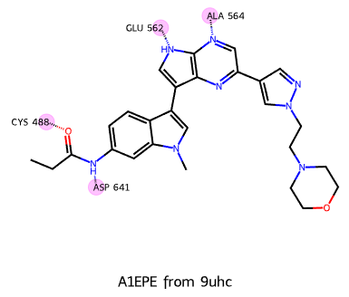
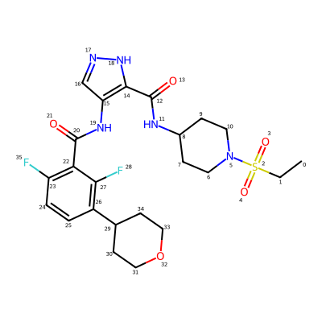
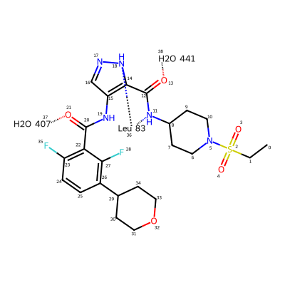
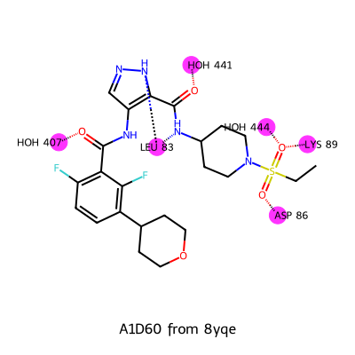
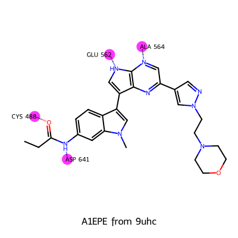
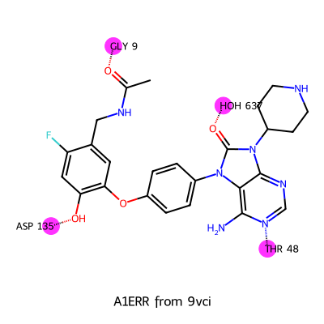

from rdkit import Chem
from rdkit.Chem import rdDepictor
from rdkit.Chem import Draw
from IPython.display import SVG
from rdkit.Chem.Draw import IPythonConsole
IPythonConsole.molSize = 400,400
import rdkit
print(rdkit.__version__)2025.03.6I’m a big fan of 2D protein–ligand interaction diagrams; when well done these plots can provide an information-dense view of the structure that is still easy to understand.
A really nice example of this is the work on PoseView from Matthias Rarey’s group in Hamburg. Here’s an example from that publication:

Though I would love to have an RDKit implementation of PoseView, actually implementing something like that is deeply nontrivial, so I’ve never really done anything in that direction. This week I had a random idea for a way to provide basic protein–ligand interaction diagrams using existing RDKit functionality. This post is an exploration of that.
Here’s an example of what you get with this:

To be clear: I am fully aware that this is not nearly as good as what PoseView and similar tools can do, but I think it’s still quite useful. I have a few ideas for straightforward changes to the backend code to improve the plots that I’m also going to take a look at.
from rdkit import Chem
from rdkit.Chem import rdDepictor
from rdkit.Chem import Draw
from IPython.display import SVG
from rdkit.Chem.Draw import IPythonConsole
IPythonConsole.molSize = 400,400
import rdkit
print(rdkit.__version__)2025.03.6Start with the ligand for a recent PDB structure, 8yqe:
# from https://www.ebi.ac.uk/pdbe/entry/pdb/8yqe?activeTab=ligands
lig = Chem.MolFromSmiles('CCS(=O)(=O)N1CCC(CC1)NC(=O)c2c(cn[nH]2)NC(=O)c3c(ccc(c3F)C4CCOCC4)F')
IPythonConsole.drawOptions.addAtomIndices = True
lig
The strategy to draw the interaction diagrams is to add a new dummy atom to the ligand molecule for each residue it’s interacting with and then connect that to the interacting ligand atom with a zero-order bond. The standard RDKit 2D coordinate generation code will then do something sensible with this.
I include hbond interactions that are around 3.0\(\AA\) or less from the list of interactions on the ligand page
lig_with_interactions = Chem.RWMol(lig)
leu83 = Chem.Atom(0)
leu83.SetProp('atomLabel','Leu 83')
aid = lig_with_interactions.AddAtom(leu83)
lig_with_interactions.AddBond(18,aid,Chem.BondType.ZERO)
lig_with_interactions.AddBond(11,aid,Chem.BondType.ZERO)
hoh407 = Chem.Atom(0)
hoh407.SetProp('atomLabel','H2O 407')
aid = lig_with_interactions.AddAtom(hoh407)
lig_with_interactions.AddBond(21,aid,Chem.BondType.ZERO)
hoh441 = Chem.Atom(0)
hoh441.SetProp('atomLabel','H2O 441')
aid = lig_with_interactions.AddAtom(hoh441)
lig_with_interactions.AddBond(13,aid,Chem.BondType.ZERO)
# this doesn't work because the ring centroid doesn't get put in the middle of the ring
# ring_center = Chem.Atom(0)
# aid = lig_with_interactions.AddAtom(ring_center)
# for rid in (22,23,24,25,26,27):
# lig_with_interactions.AddBond(rid,aid,Chem.BondType.ZERO)
lig_with_interactions
That doesn’t look terrible. Write a function to automate the process and include highlights around the residue pseudo-atoms:
def draw_ligand_with_interactions(lig,lig_name,interactions,size=(400,400)):
lig_with_interactions = Chem.RWMol(lig)
# add pseudo-atoms (and bonds to them) for the interacting residues:
pts = []
clrs = {}
for (aname,oaids) in interactions:
res = Chem.Atom(0)
res.SetProp('atomLabel',aname)
aid = lig_with_interactions.AddAtom(res)
pts.append(aid)
clrs[aid] = (1,.2,1,.3)
for oaid in oaids:
lig_with_interactions.AddBond(aid,oaid,Chem.BondType.ZERO)
d2d = Draw.MolDraw2DSVG(size[0],size[1])
# set the draw options so that we end up with circles under the pseudo-atoms:
d2d.drawOptions().circleAtoms = True
d2d.drawOptions().fillHighlights = True
d2d.drawOptions().continuousHighlight = False
d2d.drawOptions().highlightRadius = 0.5
# now draw and return the result
d2d.DrawMolecule(lig_with_interactions,legend=lig_name,
highlightAtoms=pts,highlightAtomColors=clrs)
d2d.FinishDrawing()
return SVG(d2d.GetDrawingText())
# from https://www.ebi.ac.uk/pdbe/entry/pdb/8yqe?activeTab=ligands
lig = Chem.MolFromSmiles('CCS(=O)(=O)N1CCC(CC1)NC(=O)c2c(cn[nH]2)NC(=O)c3c(ccc(c3F)C4CCOCC4)F')
interactions = (
('LYS 89',(3,)),
('ASP 86',(4,)),
('HOH 444',(3,)),
('HOH 441',(13,)),
('HOH 407',(21,)),
('LEU 83',(18,11)),
)
draw_ligand_with_interactions(lig,'A1D60 from 8yqe',interactions)
Do a couple more examples using other recent PDB structures:
# from: https://www.ebi.ac.uk/pdbe/entry/pdb/9uhc?activeTab=ligands
lig = Chem.MolFromSmiles('CCC(=O)Nc1ccc2c(c1)n(cc2c3c[nH]c4c3nc(cn4)c5cnn(c5)CCN6CCOCC6)C')
interactions = (
('ALA 564',(22,)),
('GLU 562',(16,)),
('ASP 641',(4,)),
('CYS 488',(3,)),
)
draw_ligand_with_interactions(lig,'A1EPE from 9uhc',interactions)
# from https://www.ebi.ac.uk/pdbe/entry/pdb/9vci?activeTab=ligands
lig = Chem.MolFromSmiles('CC(=O)NCc1cc(c(cc1F)O)Oc2ccc(cc2)N3c4c(ncnc4N(C3=O)C5CCNCC5)N')
interactions = (
('GLY 9',(2,)),
('ASP 135',(12,)),
('THR 48',(23,)),
('HOH 637',(29,)),
)
draw_ligand_with_interactions(lig,'A1ERR from 9vci',interactions)
There’s clearly room for improvement here (and I have a couple of ideas already), but I think this is already useful as-is.